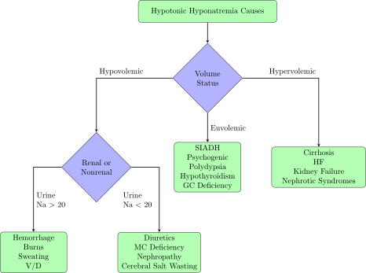

Normal Labs
| Lab |
Low |
High |
Unit |
| Na |
135 |
145 |
mEq/L |
| K |
3.5 |
5 |
mEq/L |
| Mg |
1.5 |
2.5 |
mg/dL |
| Ca |
8.5 |
10.5 |
mg/dL |
| Ionized Ca |
4.6 |
5.1 |
mg/dL |
| Phos |
2.5 |
4.5 |
mg/dL |
| Bicarb |
22 |
24 |
mEq/L |
| Osm |
275 |
290 |
mOsm/L |
Normal Fluid Repletion Rates
- 30-40 mL/kg QD (Adults)
- Holliday-Segar (Peds & Adults)
- 100 mL/kg (1st 10kgs)
- 50 mL/kg (2nd 10kgs)
- 20 mL/kg (Remainder)
- 1500 mL + 20 mL/kg * (Wt - 20kg) (for those greater than 20kgs)
- Monitor
- Wt QD
- I/Os and UOP
- Volume Status QD
- Vitals QD
- BUN/SCr
Common Fluid Composition
Crytalloids
| Soln |
Osm |
SID |
Na |
Cl |
K |
Ca |
Mg |
Lactate |
Acetate |
Free Water (mL/L) |
| NS |
308 |
0 |
154 |
154 |
— |
— |
— |
— |
— |
0 |
| 1/2 NS |
154 |
0 |
77 |
77 |
— |
— |
— |
— |
— |
500 |
| 3% Saline |
1027 |
0 |
513 |
513 |
— |
— |
— |
— |
— |
0 |
| LR |
274 |
28 |
130 |
109 |
4 |
3 |
— |
28 |
— |
0 |
| D5W |
252 |
0 |
— |
— |
— |
— |
— |
— |
— |
1000 |
| Normosol / Plasmalyte |
295 |
50 |
140 |
98 |
5 |
— |
3 |
— |
27 |
0 |
*All lytes in mEq/L
Colloids
- Albumin 5%
- 0.5-1 g/kg for hypovolemia at 2-4 mL/min (normal plasma volume) or 5-10 mL/min (hypoproteinemia)
- Albumin 25%
- 5-8 g/L removed during paracentesis of > 5 L removed at 1 2-4 mL/min (normal plasma volume) or 2-3 mL/min (hypoproteinemia)
Blood Products
- PRBCs
- 1 Unit = 230-350 mL
- 1 Unit administration leads to an increase of 1 g/dL in Hgb
Daily Fluid Losses
| Sensible |
Amount (mL) |
Insensible |
Amount(mL) |
| Urine |
400-1500 |
Skin |
350-400 |
| Defecation |
100-200 |
Lungs |
350-450 |
| Total |
1000-1500 |
Total |
1000 |
Additional Sources of Fluid Loss
- NG Tube Suction
- D / V
- Burns
- Fistulas
- Drains
- Bleeding
Sodium
Hyponatremia
Hypertonic Hyponatremia
Most commonly caused by elevated BG. Treat BG and adjust Na once BG is controlled
Pseudohyponatremia (Isotonic Hyponatremia)
Excessively high proteins and/or lipids leads to increased plasma volume. Dilution effects make sodium appear low, but measured Osm is relatively normal.
Hypovotonic Hyponatreamia

SSx
- Acute Hyponatremia
- Nausea
- HA
- Malaise
- Weakness
- Disoriented
- Coma
- Szs
- Respiratory Arrest
- Hypovolemic
- Typical SSx of dehydration
- Isovolemic
- Malaise
- Psychosis
- Szs
- Coma
- Hypervolemic
Treatment
| Syndrome |
Treatment |
| Hypovolemic |
3% Saline (Symptomatic)
NS (Asymptomatic) |
| Isovolemic |
Furosemide and 3% Saline (Symptomatic)
NS and Water Restriction (Asymptomatic) |
| Hypervolemic |
Furosemide and Small Amounts of 3% Saline (Symptomatic)
Furosemide (Asymptomatic) |
- Replete Sodium Deficit:
- For non-emergent repletion, use the “Rule of 8’s”
- 50% of deficit in 1st 8 hrs
- 25% over following 16hr
- Replete at 1-2 mEq/L/hr until SSx resolution for emergent repletion
- 3% Saline @ 1-2 mL/kg/hr x2-3hr if coma or Szs present
- NTE ≥ 8-12 mEq/L change Q24H to avoid Central Pontine Demyelination
- If presenting w/ Cerebral Edema and/or Metabolic Encephalopathy
- Consider 50% repletion at 24hr and remaining over 48-72hrs
Monitoring
- [Na] Q2-4H until asymptomatic then Q4-8H until WNL
- Watch CV, Neuro, and Pulm function regularly over 1st 12hrs
SIADH
Diagnosis
- Urine Osm > 100 mOsm/kg
- Urine Na > 20-30 mEq/L
Causes
- Tumor
- Head Trauma
- Stroke
- Meningitis
- Drugs
- Antipsychotics
- Bromocriptine
- Carbamazepine
- Chlorprompamide
- Cyclophosphamide
- Desmopressin
- Imipramine
- Meperidine
- Morphine
- Nicotine
- NSAIDs (Ibuprofen)
- Oxytocin
- SSRIs (Fluoxetine and Sertraline)
- TCAs (Amitriptyline)
- Tolbutamide
- Vincristine
- Vinblastine
Treatment
- Remove underlying cause if possible
- 1-2L Total Daily Free Water Restriction
- Vaptans if 24-48hr Free Water Restriction Fails
- Conivaptan (Severe Symptomatic Eu- and Hypervolemic)
- 20mg IV Bolus over 30min
- 20mg over 24hr x2-4d (may increase Q24H to 40mg NTE 4d)
- Tolvaptan (Asymptomatic Eu- and Hypervolemic)
- 15mg PO QD (May increase Q24H to 60mg NTE 30d)
- CIs
- Hypovolemia
- Anuria
- Pts w/o sense of thirst
- Strong 3A4 Inhibition
Hypernatremia
Classification and Causes
- Hypovolemic
- Dehydration
- Renal Fluid loss w/ Na preservation
- GI Losses
- Skin Losses
- Adrenal Problems
- Isovolemic
- Diabetes Insipidus
- Osmotic Diuresis
- Primary Polydipsia
- Skin Losses
- Hypervolemic
- Excess Na Ingestion
- MC Excess
Treatment
- Hypervolemic
- Remove offending fluid
- Match I/Os
- Diuretic if needed
- If suffering from MC excess, consider MC antagonist
- Isovolemic (Central Diabetes Insipidus)
- Desmopressin
- Acute: 0.25-0.5 mL SubQ BID
- Chronic: 0.05-0.2 mL Intranasal BID
- Vasopressin
- Continuous infusion titrated to goal UOP (checked hourly until at goal)
- Hypovolemic
- Manage hemodynamics 1st
- Correct Free Water Deficit:
- Give D5W IV or water via feeding tube
- 50% of deficit in 24hrs, 50% over 24-48hrs
Monitoring
- [Na] Q3-6H x24hr
- After SSx resolution and normal [Na] Q6-12H
- I/Os
- Fluid Status Q24H
Potassium
Hypokalemia
Causes
- Diuretics
- β-Agonist Administration
- NG Drainage
- Metabolic Alkalosis
- Diarrhea
- Mg Depletion
SSx
- Weakness
- N/V
- EKG Changes
- ST Depression
- T Wave Depression
- U Wave Prominence
- Atrial and Ventricular Tachyarrhytmias
- PVCs / PACs
- VFib
- Cramping
- Muscle Weakness
Treatment
- Correct underlying Mg deficiency if existent
- K 3.5-4
- No therapy usually needed
- May be repeated to 4 in ICU pts
- K 3-3.4
- PO for pts w/ cardiac conditions
- In other pts, repletion is debatable
- K < 3
- PO in asymptomatic
- IV in symptomatic or those NPO
IV K
- K < 3 and SSx Present
- SEs
- Thrombophlebitis
- Hyperkalemia
- NTE 10 mEq/hr w/o cardiac monitoring
- NTE 20 mEq/hr w/ cardiac monitoring
- Emergent can justify 40-60 mEq/hr if severe
Hyperkalemia
SSX
- EKG Changes
- NOT ALWAYS PRESENT OR IN THIS ORDER, TREAT AGGRESSIVELY REGARDLESS OF SSX
- Peaked T Waves
- Wide Complex
- Bradycardias
- Long-QT
- TdP
- VFib
Treamtent
- Cardiac Membrane Stabilization
- CaCl 1g IVP Q20-30Min
- Ca Gluconate 3g (Not for emergent treatment or those in hepatic failure)
- Intracellular Ca Shift
- Insulin Regular 10U IVP Q2-6H w/ 50 mL (25g) D50W IVP (unless BG is very high)
- Bicarb 50-100mEq IVP Q2-6H (avoid in metabolic alkalosis, not useful in respiratory acidosis)
- Bicarb cannot be used in ESRD pts
- Albuterol 10-20mg Nebulized (Can be continuous, lasts 1-2hrs)
- Potassium Excretion
- Furosemide 20-40mg IVP Q4-6H (useless if K is high from renal failure)
- 4hrs hemodialysis
- SPS 15-60g PO or PR (has very poor evidence, avoid)
- Patiromer (K Binder) 8.4g PO
Magnesium
Hypomagnesemia
Causes
- Diarrhea
- Amphotericine
- Diuretics (Loops and Thiazides)
- Cyclosporine
- EtOH
SSx
- Often masked by hypocalcemia or hypokalemia
- Tetany
- Convulsions
- Ventricular arrythmias
- Ataxia
- Szs
- Lethargy
- Confusion
- Nystagmus
Treatment
- PO
- Milk of Mag 5-10mL PO QID
- MgO 800mg PO QD or 400mg PO TID w/ food
- IV (Symptomatic or NPO)
- Mg 1-2: 0.5 mEq/kg
- Mg < 1: 1mEq/kg
- 8 mEq = 1g
- Infuse at 1g per hour
- May take up to 48hrs to normalize
Hypermagnesemia
Causes
- Renal Failure
- Excessive Consumption of Mg containing laxatives
- Treatment of eclampsia
SSx
- Sedation
- Loss of Reflexes
- Lethargy
- Respiratory Paralysis
- Hypotension
- Heart Block
- “Slows everything down”
Treatment
- CaCl 1g IVPB repeated PRN for cardiac presevation
- IV Hydration (NS, 1/2 NS) 200 mL/hr and add 1-2g Ca
- IV Furosemide
- Dialysis
- Supportive care
- Cardiac pacing
- Pressors / Inotropes / Inopressors
- Ventilation
Calcium
Assess via Corrected Calcium:
Hypocalcemia
Causes
- Mg Deficiency
- Large volumes of blood products
- Hypoalbuminemia
- Hypoparathyroidism
- Vit D Deficiency
- Thyroid Surgery
- Medications (Ex. Loops)
SSx
- Parasthesias
- Cramps
- Tetany
- Depression
- Anxiety
- Confusion
- Memory Loss
- Hallucinations
- Szs
- Hair Loss
- Weak nails
- Eczema
- Long-QT
- Bradyarrhythmias
Treatment
- Correct hypomagnesemia
- 1-3g PO Ca
- CaCO3 650 mg PO QID = 1g Ca
- 100-300mg IV Ca over 5-10min
- 1g CaCl = 3g Ca Gluconate = 270mg Ca
- Gluconate prefered due to decreased risk of necrosis and extravasation
- 1g Ca per hour
- May need to supplement Vit D
- Calcitriol 0.25mcg PO QD or QOD
- Can increase by 0.25mcg Q4-8W Max of 1mcg PO QD
| Ca Salt |
Route |
Ca / g (mg) |
Ca / g (mEq) |
| Carbonate |
PO |
400 |
20 |
| Citrate |
PO |
211 |
10.6 |
| Glubionate |
PO |
64 |
3.2 |
| Lactate |
PO |
130 |
4.5 |
| Phosphate |
PO |
230-400 |
11.5-20 |
| Chloride |
IV |
270 |
13.5 |
| Gluconate |
IV |
90 |
4.5 |
Hypercalcemia
Causes
- Cancer
- Primary Hyperparathyroidism
- Increased absorption / consumption
- Decreased renal elimination
- Increased bone breakdown
SSx
- Acute
- Anorexia
- N / V / C
- Polyuria / Polydipsia
- Nocturia
- Chronic
- Metastatic Calcification
- Nephrolithiasis
- CKD
- Hypercalcemic Crisis
- ARF
- Obtunded
- Coma
- Arrhythmias
Treatment
- NS 200-300 mL/hr
- Normal or moderate renal impairment
- Pts are usually dehydrated
- Furosemide
- Increase Ca loss and prevent fluid overload
- Calcitonin
- 4 U/kg SC or IM Q12H (Max 8 U/kg Q12H)
- CHF or moderate-severe renal impairment
- Increases bone resorption and decreases renal reabsorption
- Bisphosphonates
- If from bone breakdown
- Pamidronate 30-90mg IV over 2-24hr
- Takes ~2 days to decrease
- GCs
- If multiple myeloma, leukemia, lymphoma, or sarcoidosis
- Decreases GI absorption of CA
- Interferes w/ Vit D metabolism => increased bone reabsorption and decreased osteoblast proliferation
- Slow onset
Phosphate
Hypophosphatemia
Causes
- Decreased Intake
- Impaired Absorption
- Intracellular shifts (refeeding syndrome)
SSx
- Irritability
- Myalgia
- Rhabdo
- Paranoia
- Szs
- Coma
- Parasthesias
- Obtunded
- Acute Renal Failure
- Cardiomyopathy
- Arrhythmias
- Respiratory Failure
- Delerium
- Hemolysis
- WBC Dysfunction
- Plt Dysfunction
Treatment
- Phos 1-2 mg/dL: PO Phos-NaK 30-60 mmol QD in 2-3 divided doses
- Phos <1 (or symptomatic): KPhos (K < 4) or NaPhos
- 1 mmol NaPhos = 1.33 mEq Na and Phos
- 1 mmol KPhos = 1.47 mEq K and Phos
- Phos 2.3-2.9: 0.32 mmol/kg Phos
- Phos 1.6-2.2: 0.64 mmol/kg Phos
- Phos < 1.6: 1 mmol/kg Phos
- NTE 7 mmol/hr and consider K infusion rate
Hyperphosphatemia
Causes
- Renal Failure
- Hypoparathyroidism
- Excessive Intake
SSx
- Soft tissue calcification if
- Concurrent hypocalcemia
Treatment
- IV Ca if severe hyperphosphatemic
- Follow guidelines above for hypocalcemia
- Decrease phosphate intake and GI absorption